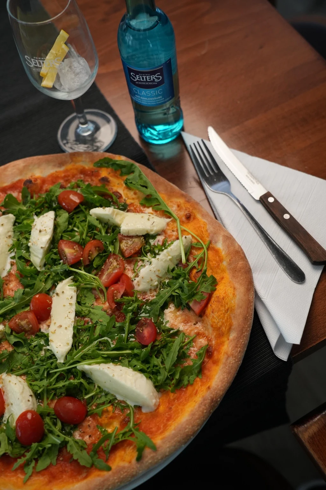

Direkt online.
Wählen Sie Ihre Gerichte auf unserer Bestellseite. Dort entscheiden Sie selbst zwischen Abholung und Lieferung.
Über unsere Website bestellenAlberto für zu Hause
Pizzaabend mit Freunden, Pasta nach einem langen Tag oder ein italienisches Essen zu zweit: Bestellen Sie bequem zur Abholung oder Lieferung.
Wählen Sie Ihre Gerichte auf unserer Bestellseite. Dort entscheiden Sie selbst zwischen Abholung und Lieferung.
Über unsere Website bestellenSie bestellen lieber über Lieferando? Hier geht es direkt zu unserem Restaurant und der verfügbaren Auswahl.
Über Lieferando bestellenRufen Sie uns an und sagen Sie uns, was Sie möchten – zum Mitnehmen oder nach Hause geliefert.
+49 7621 686 92 05
Lieferservice ab 20 €
Seit 2023 gehört der Lieferservice zu Alberto. Mit mehreren Jahren Erfahrung bringen wir unsere italienische Küche auch zu Ihnen nach Hause. Ob Pizza Margherita, eine würzige Diavolo, Pasta oder ein Dessert zum Abschluss: Stellen Sie Ihr Essen nach Ihrem Geschmack zusammen.
Mindestbestellwert für Lieferung: 20 €. Abholung oder Lieferung wählen Sie auf der Bestellseite oder besprechen es mit uns am Telefon.